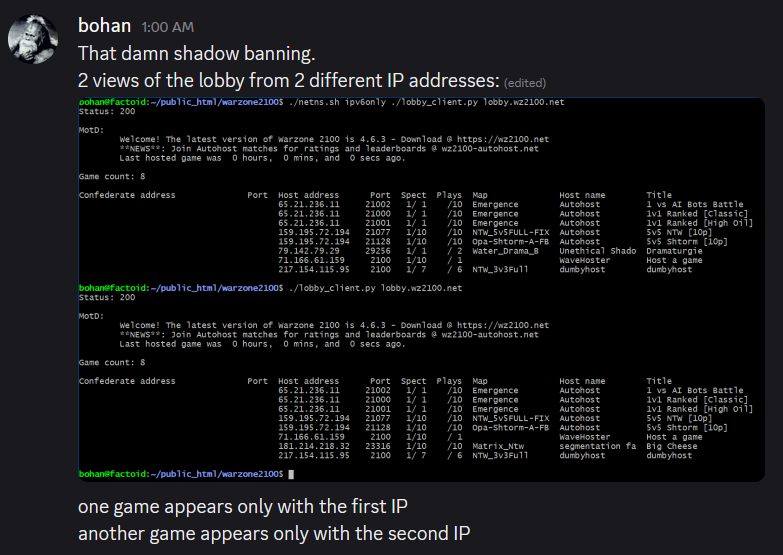

Remade Legacy Hub
A modern command hub for Warzone 2100.
This remake turns the old single-file community page into a cleaner command deck for live lobby awareness, public replay access, leaderboard entry points, and alternate infrastructure built around transparency.
Live Lobby
Live server visibility without digging through a giant page.
The original hub exposed the lobby stream in several formats. The remake keeps that access front and center and gives the live table a dedicated surface.
Lobby HTML
Readable browser view
Open the dedicated live lobby page.
Lobby TXT Terminal-friendly outputUse plain text when you just want the list quickly.
Lobby JSON Automation endpointFetch the latest game list as structured data.
Lobby Stream EventSource feedSubscribe to streaming updates with no manual refresh.
Streaming Lobby View
Connecting to lobby feed...
| Host | Players | Spectators | Status | Map | Title |
|---|---|---|---|---|---|
| No lobby data loaded yet. | |||||
Deploy this page next to the Warzone data endpoints to enable the full live stream.
Leaderboards
Rankings, match history, and replay access with less friction.
The old hub packed a lot of ranking logic into one section. This remake breaks the categories out into quick-glance cards and keeps the raw data routes easy to reach.
Global
All tracked matches combined into the broad leaderboard view.
1v1 Modes
Standard 1v1, high-oil duels, and classic-map matchups.
2v2 / 3v3 / 4v4 / 5v5
Structured alliance formats with evenly sized teams.
FFA & Multi-Team
FFA, 2v2v2v2, and 3v3v3 splits remain tracked separately.
Shtorm & Matrix
Special leaderboard views for the map names players look for most.
NTW / Shared Research / 45+ Min
Long-form and rules-specific match slices for deeper analysis.
Rating & Access
Integrated rating, alternate infrastructure, and practical setup.
In 2026 the integrated rating display was reintroduced through host-sent values using the existing stars and medals UI. The alternate lobby keeps that spirit going by prioritizing open visibility instead of closed gatekeeping.
Integrated Rating
Patchable, visible, and compatible.
The modified client sends ratings from the host so everyone sees a shared view instead of meaningless local-only stats. It is framed as a first step toward bringing useful rating context back into Warzone 2100.
Download PatchAlternate Lobby Server
Point your client at warzone2100.retropaganda.info
The replacement lobby server supports confederation, so other servers can exchange listings with it instead of living inside one centralized choke point.
config
masterserver_name=warzone2100.retropaganda.info
port
masterserver_port=9990
Situation Report
A calmer, clearer timeline of the legacy page's main claims.
The old page mixed live widgets with a long narrative. Here, the main events are broken into a dated timeline so the context is easier to follow.
Lobby access ban
The legacy report states that the main IP was banned from lobby.wz2100.net
after roughly one day of hosting, which prevented both listing visibility and hosting
through that lobby.
Severe slot limits
Hosting capacity reportedly dropped from three available slots to effectively half a slot, while other machines were still able to keep multiple simultaneous hosts online.
Forged player counts claim
The page documents inconsistent player counts where some viewers saw normal values and the author reportedly saw zero or reduced player totals on the same games.
Shadow-ban accusation
The legacy claim is that hosted games could still appear to the author while remaining invisible to most other users, creating a one-sided listing effect.
Autohost lockout
The page says access to the Autohost machines was revoked, which also means those match results would no longer end up in this site's public archive.
Discussion removed
A short GitHub discussion titled "Health report on lobby.wz2100.net" was reportedly deleted within two hours, followed by a block on further interaction with the organization.

Open Data
The raw material stays public.
The original hub was explicit about open access to data, replays, and reproducible rankings. That principle stays intact here.
What is published
- Replay files for independent verification.
- Leaderboard categories derived from the public dataset.
- Live lobby state as browser, text, JSON, and stream views.
Data source notes
- This site's own collected results and replays remain the baseline source.
- The legacy page noted that other external result sources became unavailable or blocked.
- The direct
results.jsonroute is currently unstable, so the remake favors working entry points. - The remake keeps those constraints visible without burying them in long paragraphs.
Direct routes
Community
Keep the hub useful, reproducible, and easy to reach.
The original page closed with direct contact routes. The remake keeps that simple: Discord for fast contact, open links for data, and the legacy page still available for the unabridged context.